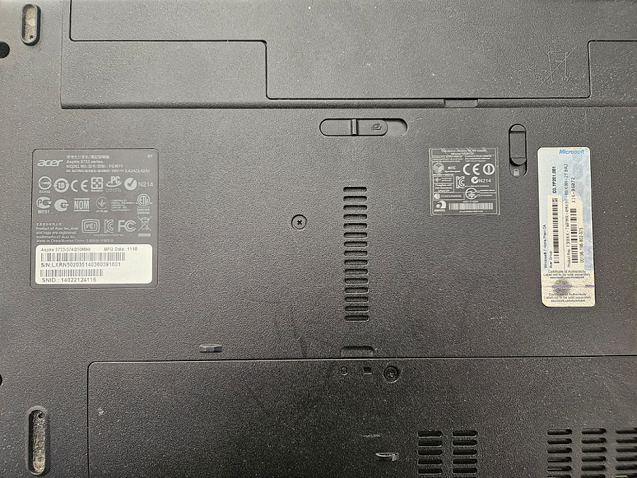
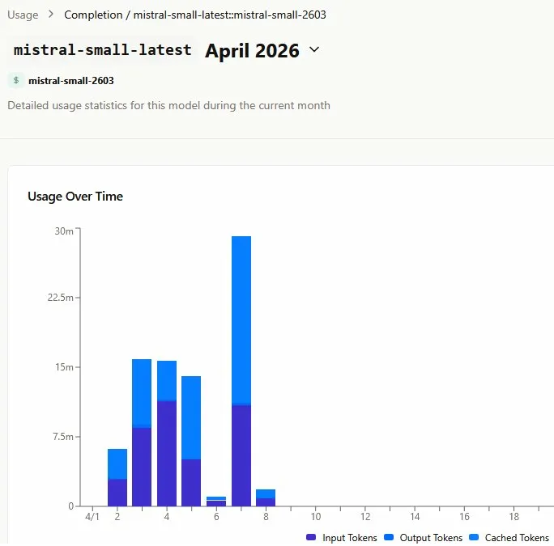
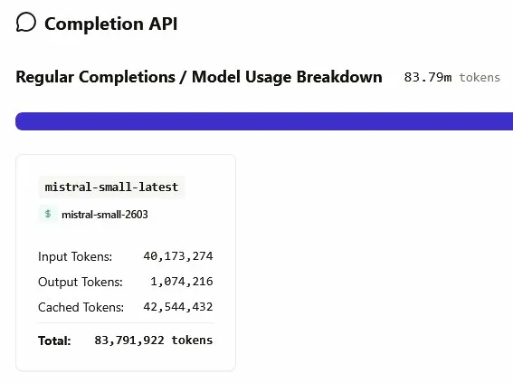

Building a Raspberry Pi Nanobot: Task Failed Successfully
Raspberry Pi AI Mistral Debugging Consumer Rights
There's a meme that perfectly summarizes the past few days of my life. A Windows XP dialog box, the information icon, very official. It reads: "Task failed successfully."
That's the post. Except it's not, because I'm stubborn.
Step 0: Find a card reader (two hours I'll never get back)
The Raspberry Pi's SD card died before I wrote a single line of bot code.
Fine. I just needed to wipe it and reinstall the OS. Simple enough.
Except my main PC doesn't have a card reader. So I looked around for something to flash the card from. Found an old Windows PC sitting on a shelf collecting dust. Figured I'd boot from USB, run the flashing tool, be done in twenty minutes.
The BIOS had Secure Boot enabled and no CSM mode, GRUB refused to run. So I thought: I'll just update the BIOS on this Acer Aspire 5733. Went to Acer's website. Downloaded their update tool. It didn't work. Tried entering the serial number manually on their support page. It didn't work either.
Their own serial number. On their own website. For a machine they manufactured and sold.

Feel free to try it yourself at acer.com/support. Manufacturing date: November 2010.
That 2010 Acer Aspire wasn't just old. Acer had quietly stopped acknowledging it existed. A perfect illustration of why I have Clippy as my Google profile picture, and why I'm part of the Clippy movement.
So I gave up on the Aspire. Took a breath. And thought about it differently.
I'm an IT support professional. I have been fixing computers for over twenty years. Somewhere in this house there has to be a USB SD card reader.
I went to the garage. Dived into a sea of cables, dead hard drives, and things I could no longer identify. And then, hiding inside an old laptop bag I hadn't opened in years, there it was. A USB-to-SD card reader. I could have kissed it.
Plugged it into the USB-C port on my main PC. Fixed the partition. Upgraded to the latest stable OS.
Raspbian GNU/Linux 12 (Bookworm) on a Raspberry Pi 3 B+, for the record. I confirmed this by asking the bot directly once it was running.

It crashed mid-answer. Incredible.
Step 1: Building the thing (and the first dead end)
Once the Pi was back up, I tried Picobot first. Got Telegram connected. But Picobot wouldn't register either API key I gave it, not Claude, not Mistral. I went through YouTube tutorials. I dug through the documentation. Nothing clicked. It may simply not have been the right fit for my setup; I'm not passing judgment on the project.
After enough time lost, I said forget it and looked for alternatives. That's when I found Nanobot.
In under twenty minutes, Nanobot had both the Claude and Mistral APIs connected and responding through Telegram. I cannot overstate how relieved I was at that moment.
I also took the opportunity to properly lock down the Pi, firewall rules, router hardening, and a honeypot to log any intrusion attempts. But that's a whole other chapter for another post.
Step 2: The "Task Completed" era
That's when things got interesting again; in the worst way.
I'd send a message. The bot would respond: "Task Completed."
That was it. Every time. For hours. No content, no reasoning, no answer, just that string.(So fustrating; I sent the message back at him multiple times)
The API wasn't throwing visible errors. The bot thought it was succeeding. I had to SSH into the Pi, open the bash terminal, and dig through the raw logs to understand what was actually happening.
What I found:
2026-04-08 11:13:13.950 | WARNING | nanobot.providers.base:chat_stream_with_retry
Service tier capacity exceeded for this model. type: service_tier_capacity_exceeded
2026-04-08 11:13:38.111 | ERROR | nanobot.agent.loop:_run_agent_loop:273
LM returned error: {"object":"error","message":"Service tier capacity exceeded
for this model.","type":"service_tier_capacity_exceeded","param":null,"code":"3505",
"raw_status_code":429}The free tier of the Mistral API was being overwhelmed. Too many calls, rate limit hit, silent failure, returning the fallback "Task Completed" string instead of an actual response. Nanobot's built-in retry logic, three attempts, then pause, was already handling the retries. What I was missing was visibility. Once I could actually see the failures in the logs, I could understand the pattern.
Some requests go through. Some don't. Russian roulette.
Step 3: The numbers
By the time I checked the Mistral usage dashboard, I'd processed 83.79 million tokens across development and testing.


- Input tokens: 40,173,274
- Output tokens: 1,074,216
- Cached tokens: 42,544,432
- Total: 83,791,922
Total money saved versus a paid tier: around 10 euros.
Total time spent building and debugging: probably two full days.
Make of that what you will.
Where I actually am
The bot runs. Not cleanly, not reliably, but it runs.
What I'm thinking about next is a two-tier API architecture: light tasks, verification, context checks, quick lookups, routed through the Mistral free tier; heavier requests that need real reasoning sent to a paid API with better reliability. That should reduce both failure rate and cost while keeping the thing actually usable day-to-day.
Would a paid Claude API from day one have been faster and smoother? Who knows ? Would I have learned as much? No.
Building a personal AI assistant is not like the YouTube tutorials make it look. The videos show you the version where everything works. This is the version where your SD card dies, your backup laptop's serial number doesn't exist, and your bot tells you it completed a task it never started.
Not giving up. Next iteration coming.
Thank you for reading.